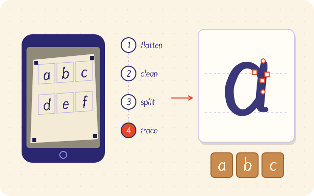
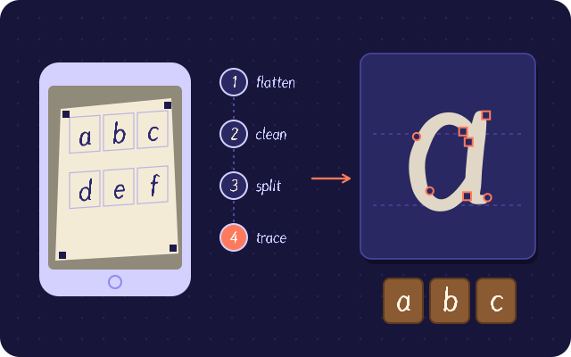

A biblioteca do ateliê
Guias para criar fontes
Guias práticos para criar fontes: da sua primeira fonte com a sua letra até ícones, SVG e o processo completo de criação.
 como criar uma fonteComo criar uma fonte, da primeira letra ao arquivo prontoLer o guia
como criar uma fonteComo criar uma fonte, da primeira letra ao arquivo prontoLer o guia 


criar fonte com minha letraComo criar uma fonte com a sua própria letra (grátis, no navegador)Ler o guia criar fonte online grátisComo criar uma fonte online grátisLer o guia
criar fonte online grátisComo criar uma fonte online grátisLer o guia 
 transformar svg em fonteComo transformar arquivos SVG em fonteLer o guia
transformar svg em fonteComo transformar arquivos SVG em fonteLer o guia